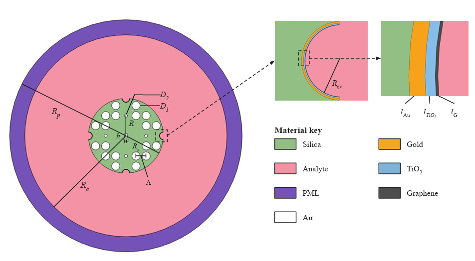
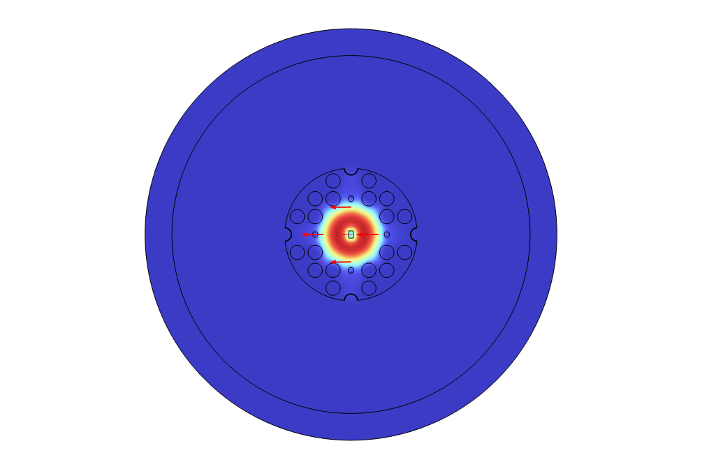

1. Sensor geometry twin

Exact geometry mode: the default view is the paper design. The interactive schematic uses the same four-groove topology and updates with slider values, but it is illustrative rather than a meshed FEM geometry.
silicaairanalytePMLAuTiO₂graphene
Physical design variables
2. Field distributions and 3D views

Core X mode: electric field mainly confined near the central guiding region.
3. Normal/pathological RI-pair interrogation DEMO SURROGATE
Normal resonance
—
nm
Pathological resonance
—
nm
Δλ
—
nm
Wavelength sensitivity
—
nm/RIU
Mean FWHM
—
nm
FOM
—
RIU⁻¹
Separability D
—
dimensionless
AS proxy
—
RIU⁻¹ · demo
Confinement-loss resonance preview
4. ML-assisted inverse design
No candidate generated yet.
5. Fabrication robustness
No tolerance study yet.
6. Manuscript reference performance
| Comparison | WS (nm/RIU) | Archived AS (RIU⁻¹) |
|---|
These values are displayed as manuscript reference values. They are not generated by the demonstration surrogate.